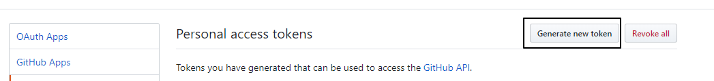

本文介绍如何使用 TravisCI 来实现 git push 之后，自动更新 GitHub Page
准备
本文章，默认读者已熟悉 travis 配置，以及 git 相关命令
流程
- git push
- travis 执行脚本
- 安装依赖
npm install or yarn
- 配置 git global config
- clone git page 仓库
- 生成 html 静态文件
- commit 更新时间
- push
生成 github token
生成 token, 让 travis 可以根据 token 拿到 push 到 git 的权限
生成 token 地址

生成新的 token 之后，在 travis 对应的仓库里面设置环境变量

之后就是写配置文件了
Travis Config
确定流程之后，就可以开始写配置文件 .travis.yml:
date '+%Y-%m-%d %H:%M:%S' 是获取系统时间，具体参考 date command, set variable in bash
- git commit -m "Site updated -
date '+%Y-%m-%d %H:%M:%S'"
1
2
3
4
5
6
7
8
9
10
11
12
13
14
15
16
17
18
19
20
21
22
23
24
25
26
27
28
29
30
31
32
33
34
35
36
37
38
39
| language: node_js
node_js: stable
before_install:
- git config user.name "cwxyz007"
- git config user.email "jie844067636@gmail.com"
install:
- yarn
before_script:
- mkdir ./public
- cd ./public
- git clone "https://${GitRepo}" .
- cd ..
script:
- hexo g
after_script:
- cd ./public
- git add .
- git commit -m "Site updated - `date '+%Y-%m-%d %H:%M:%S'`"
- git push "https://${GitToken}@${GitRepo}" master:master
branches:
only:
- master
cache:
yarn: true
npm: true
env:
global:
- TZ: Asia/Shanghai
- GitRepo: github.com/cwxyz007/cwxyz007.github.io.git
|
坑
在配置 git commit 命令的时候，配置为
1
2
3
| script:
- git commit -m "Site updated - `date '+%Y-%m-%d %H:%M:%S'`"
- git commit -m "Site updated: `date '+%Y-%m-%d %H:%M:%S'`"
|
提交上去之后，Travis 提示 command not found，通过查找，发现是 yaml 语法错误，因为 Site updated 后面的 : 没有转义，所以整句命令执行出错，谨记！